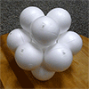
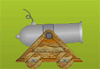
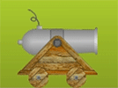

This source code accompanies Ian Parberry's Introduction to Game Physics with Box2D. To make proper use of it you must have Microsoft Visual Studio and the DirectX 9 SDK.
This source code accompanies Ian Parberry's Introduction to Game Physics with Box2D. To make proper use of it you must have Microsoft Visual Studio and the DirectX 9 SDK.
The following zip files contain the source code and project files for Visual Studio 2012.
Chapter 3:
Pool End Game (13.6MB)
Chapter 4:
Ball and Spring Toy (13.4MB)
Chapter 5:
Box2D Getting Started (14.9MB)
Chapter 7:
Cannon Game (15.6MB)
Chapter 8:
Cannon Game with Stars (15.8MB)
The following documentation was generated from the source code
using Doxygen.
Chapter 3:
Pool End Game
Chapter 4:
Ball and Spring Toy
Chapter 5:
Box2D Getting Started
Chapter 7:
Cannon Game
Chapter 8:
Cannon Game with Stars
For Advanced Readers:
Game Engine
Created September 14, 2012. Last updated August 3, 2019.